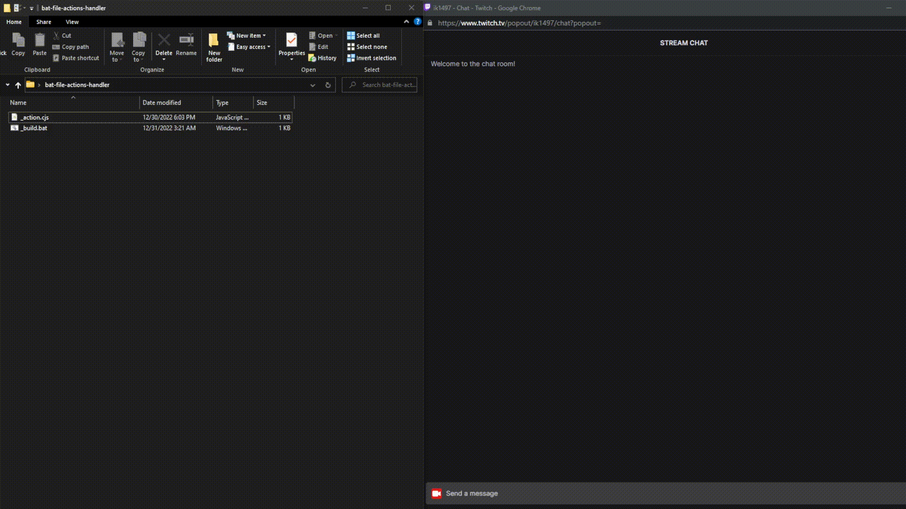
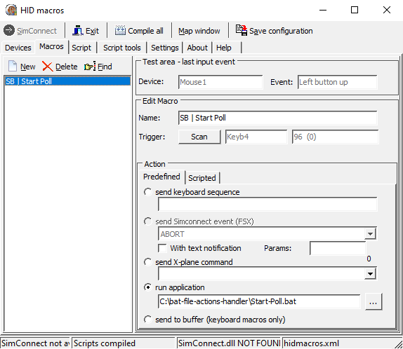

.bat Actions Handler
Run action with .bat Files
Download
Warning: The files need to stay located in the same folder.
Prerequisites
- Node.js: Node.js is needed to send out the action via the command line to Streamer.bot. Install: https://nodejs.org/en/ you can choose either versions. To verify it's installed correctly go the your command line (windows + r --> cmd) and type node -v and if it says v..... you have installed it correctly.
- HTTP Server: in Streamer.bot the HTTP Server needs to be enabled, you can leave it at the default settings, but if you choose to change it go to the action.cjs file and change the settings at the top of the file.
Installation
- In the .zip file attached there is a folder, this by default contains two files: _action.cjs, _build.bat you don't have to touch the _action.cjs. To make the scripts you need to use the _build.bat file, open this file and fill in the form. After you've filled in this form there will be two new files in your folder. a .bat and a .vbs file, I'll recommended you to use the .vbs file, but you can also use the .bat file fine (note: the .bat file will temporarily open a black window).
HIDMacros Setup Guide (Optional)
For any suggestions about this extension send me a DM on discord or open an issue.
If there are any bugs with this Extension you can make a #support post in The Streamer.bot Discord Server.